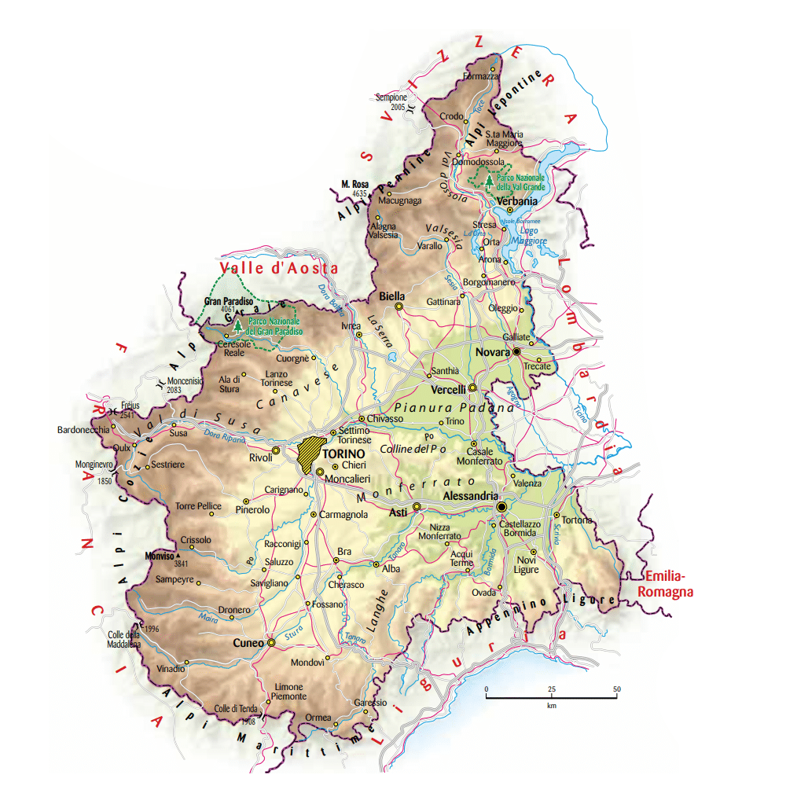
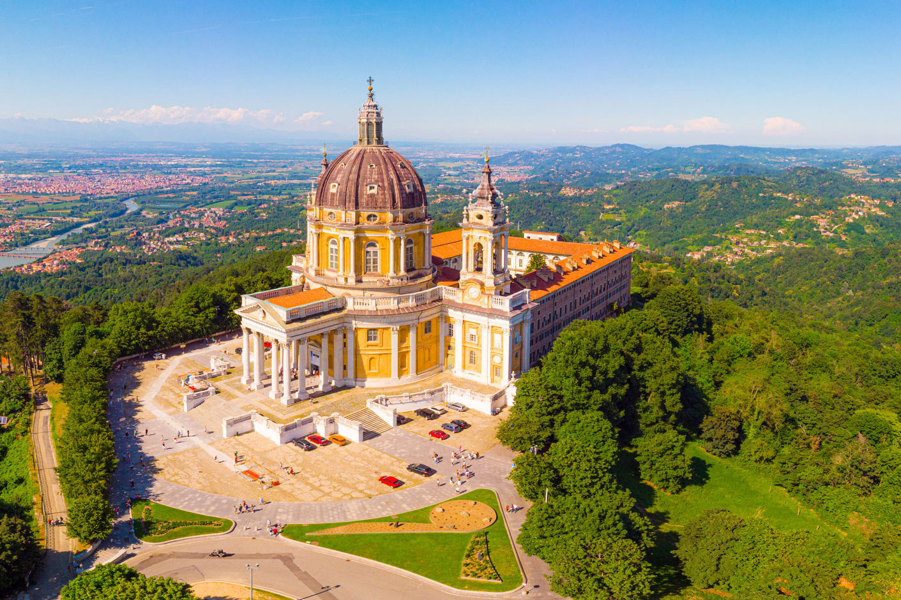

| Nome |
Piemonte |
| Capoluogo |
Città Metropolitana di Torino (TO) |
| Data di Istituzione |
1 Gennaio 1948 |
| Altitudine media |
416 m.s.l.m |
| Superficie |
25.387 km^2 |
| Abitanti (agosto 2023) |
4.234.508 |
| Densità |
418 ab/km^2 |
| Comuni |
1180 |
| Province |
Alessandria (AL), Asti (AT), Biella (BI), Cuneo (CN), Novara (NO), Verbania (VB), Vercelli (VC) |
| Confini |
Emilia-Romagna, Liguria, Valle d'Aosta, Lombardia, Francia, Svizzera |
| Patrono |
S.Francesco di Sales, S.Eusebio di Vercelli |
| PIL procapite (2022) |
33.800€ |
Posto da visitare assolutamente: Basilica di Superga - Torino (TO)
La Basilica di Superga è un importante luogo di culto cattolico
situato sulla collina di Superga, nei pressi di Torino, Italia.
La basilica è famosa per la sua imponente architettura barocca
e per la vista panoramica che offre sulla città di Torino e sulle Alpi.
Ecco alcuni dettagli sulla Basilica di Superga:
Storia:
La costruzione della Basilica di Superga fu commissionata da Vittorio Amedeo II,
Duca di Savoia, per celebrare la vittoria delle truppe sabaude contro
le truppe francesi e spagnole durante la Guerra di Successione Spagnola.
La basilica fu progettata dall'architetto Filippo Juvarra e
i lavori di costruzione iniziarono nel 1717.
Architettura:
La Basilica di Superga è un esempio notevole dell'architettura barocca piemontese.
La facciata è caratterizzata da colonne corinzie e da una grande cupola,
mentre l'interno è ricco di decorazioni barocche, affreschi e sculture.
La cupola è particolarmente impressionante e offre una vista panoramica
eccezionale sulla città di Torino e sulle montagne circostanti.
Cappella Reale:
All'interno della basilica si trova la Cappella Reale,
dove sono sepolti numerosi membri della famiglia reale sabauda,
inclusi i re Vittorio Amedeo II e Carlo Emanuele III.
La cappella è adornata con opere d'arte e sculture di grande valore artistico.
La Tragedia di Superga:
La Basilica di Superga è tristemente nota per un evento tragico avvenuto il 4 Maggio 1949.
La squadra di calcio del Grande Torino stava tornando da Lisbona,
dove aveva giocato una partita amichevole contro il Benfica.
L'aereo su cui viaggiavano si schiantò contro la collina di Superga,
pensando di avere più quota, causa fittissima nebbia,
causando la morte di tutti a bordo, nessuno sopravvisse.
Questa tragedia è ancor oggi ricordata e commemorata dai tifosi del Torino.
Accessibilità:
La Basilica di Superga è facilmente accessibile da Torino tramite
una funicolare che parte dalla stazione di Sassi.
La salita offre già un'anticipazione della vista panoramica che si
gode dalla collina.
Festa di Superga:
La Basilica di Superga è celebrata ogni anno con una festa,
spesso con eventi religiosi e culturali che attirano pellegrini
e visitatori da tutto il Piemonte.
La Basilica di Superga è quindi un importante luogo di culto,
un capolavoro architettonico e una tappa significativa nella
storia della città di Torino. La sua posizione panoramica la rende
anche una meta turistica molto apprezzata.
